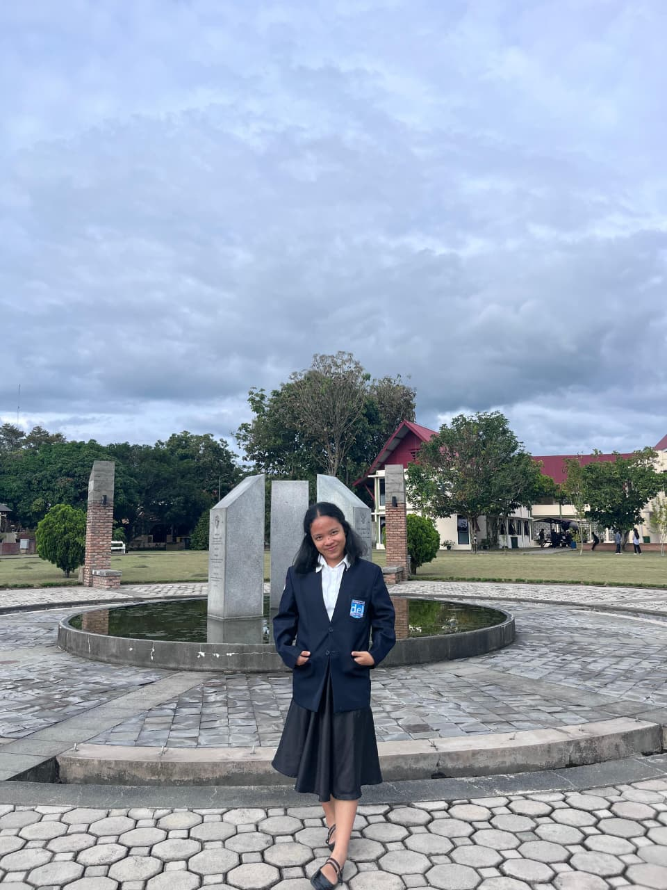
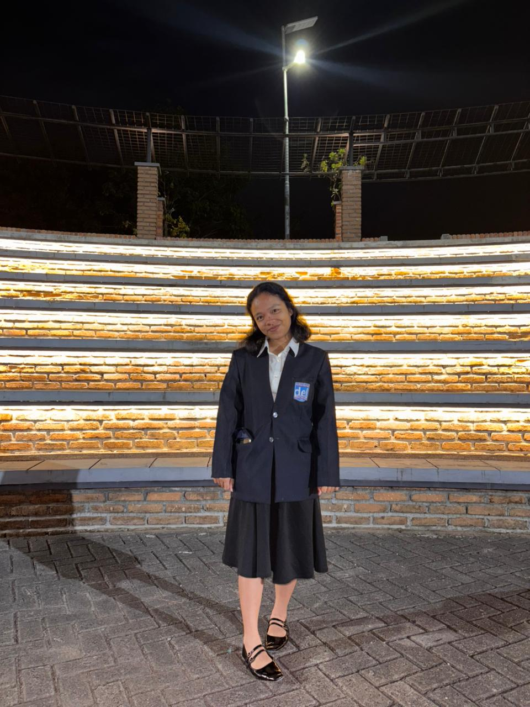
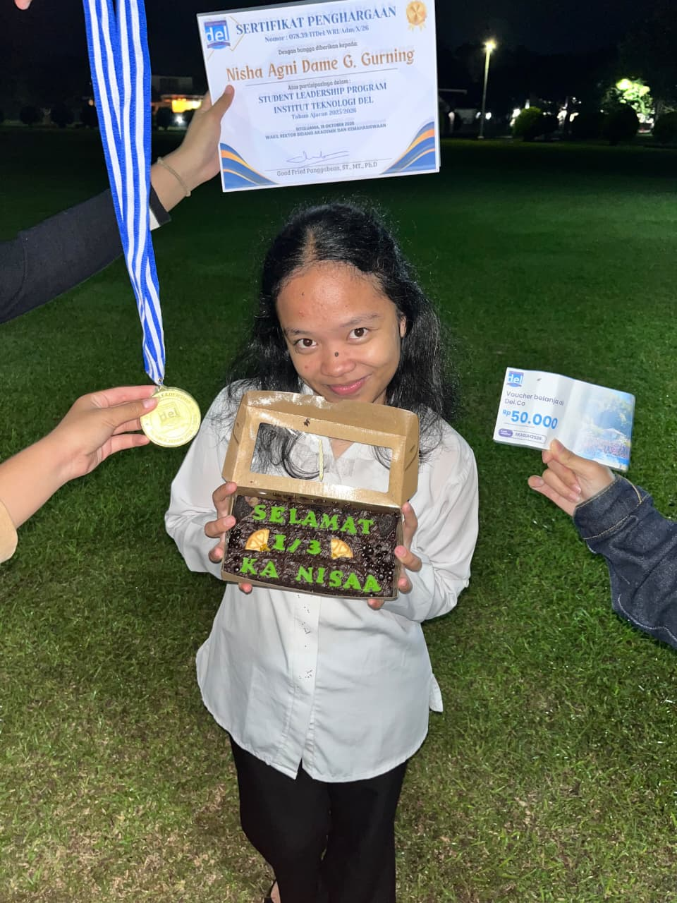
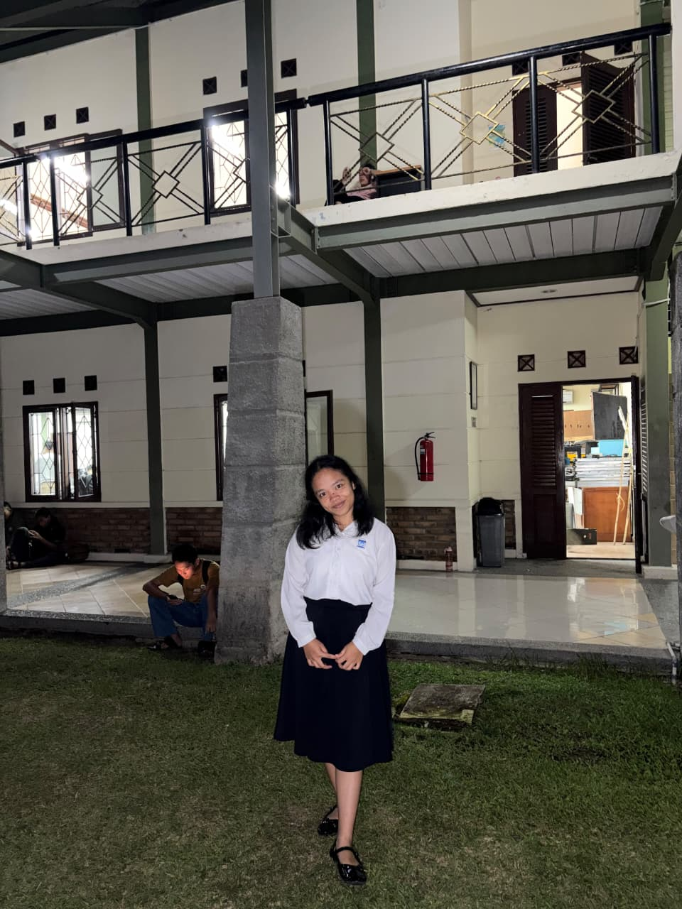
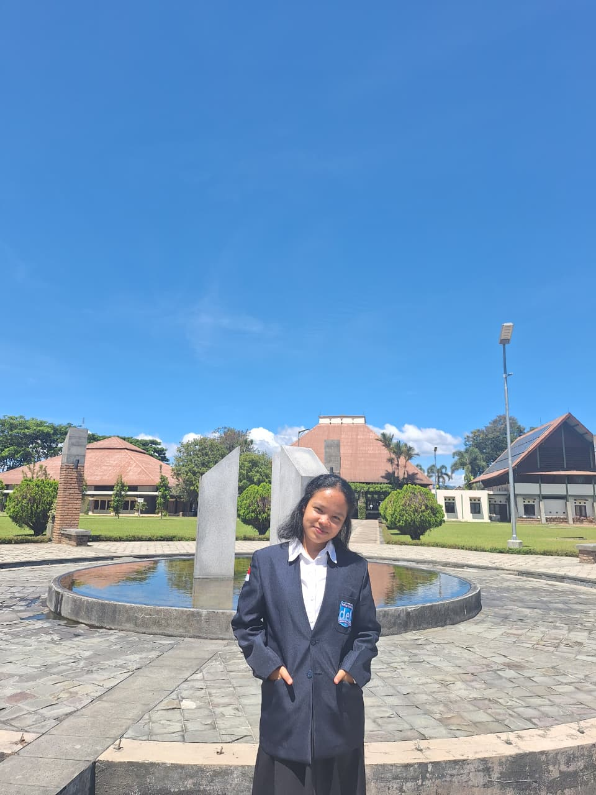
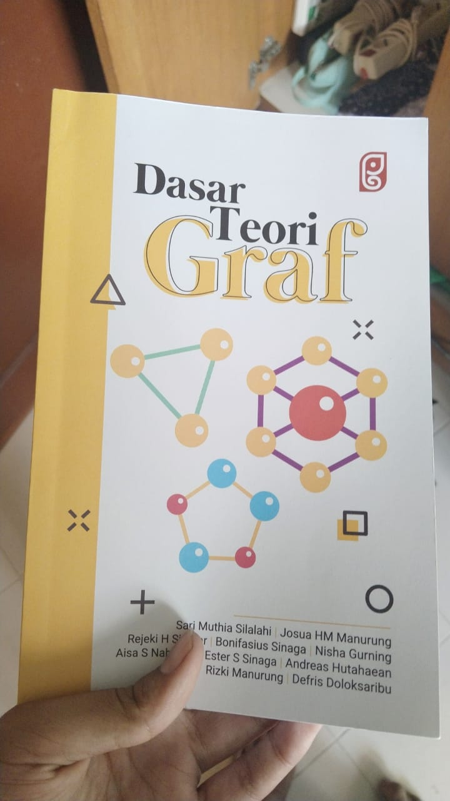
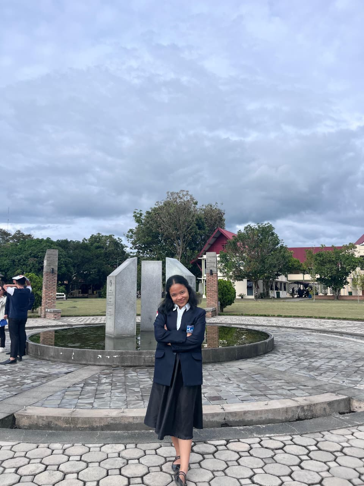

HIMPUNAN MAHASISWA
Teknologi Komputer (HIMATEK)
Bergabung dalam HIMATEK sebagai anggota dan mengikuti kegiatan, diskusi, serta program kerja untuk mengembangkan minat dan potensi di bidang teknologi komputer.



Tertarik pada pengembangan website, sistem informasi, Internet of Things (IoT), dan Artificial Intelligence.
TECH STACK
PENGALAMAN & KARYA
HIMPUNAN MAHASISWA
Bergabung dalam HIMATEK sebagai anggota dan mengikuti kegiatan, diskusi, serta program kerja untuk mengembangkan minat dan potensi di bidang teknologi komputer.

Bertugas dalam penyediaan konsumsi kegiatan, serta membantu divisi lain jika dibutuhkan.



Mendampingi dan menjadi rekan belajar bagi mahasiswa baru / room leader.



Bertugas dalam divisi polling untuk memastikan kelancaran proses pemilihan.


PROYEK SAYA
Website klinik untuk reservasi pasien, manajemen dokter dan jadwal praktik, serta layanan konsultasi online.
Contoh proyek sistem klinik dengan alur reservasi pasien, pengelolaan dokter, jadwal praktik, dan konsultasi.
Miniatur sistem konveyor untuk menghitung objek dan melakukan penyortiran secara otomatis.
Miniatur konveyor menghitung objek dan menyortirnya secara otomatis. Gunakan tombol pada foto untuk melihat kedua gambar proyek.
Pengembangan sistem rekomendasi layanan dan informasi klinik berbasis AI menggunakan LoRA Fine-Tuning dan RAG untuk membantu kualitas layanan pasien.
Galeri menampilkan halaman reservasi pasien dan antarmuka asisten AI Nauli Dental Care. Gunakan tombol pada foto untuk melihat keduanya.
Pengembangan sistem rekomendasi layanan dan informasi klinik berbasis AI menggunakan LoRA Fine-Tuning dan RAG untuk membantu kualitas layanan pasien.
TobaGuide AI adalah asisten berbasis RAG yang menyusun rencana perjalanan Danau Toba lengkap dengan estimasi biaya, akomodasi, dan transportasi. Selain membantu wisatawan menyesuaikan rute dengan anggaran, sistem ini menganalisis ribuan ulasan pengunjung guna memberi masukan evaluasi bagi UMKM serta pengelola destinasi.
HUBUNGI SAYA
Saya selalu terbuka untuk kesempatan baru, kolaborasi, atau sekadar bertukar informasi. Silakan hubungi saya melalui kontak berikut.
Kirim Email
Institut Teknologi Del, Kabupaten Toba